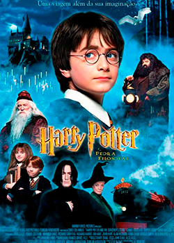
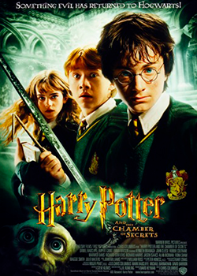
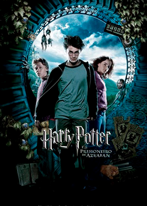
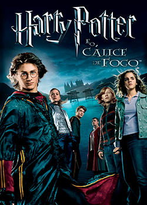
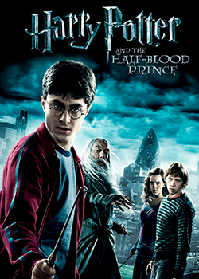
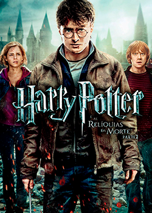

1. Animais Fantásticos e Onde Encontrá-los (2016) - 1926
2. Animais Fantásticos: Os Crimes de Grindewald (2018) - 1927
3. Harry Potter e a Pedra Filosofal (2001) - 1991-1992
4. Harry Potter e a Camêra Secreta (2002) - 1992-1993
5. Harry Potter e o Prisioneiro de Azkaban (2004) - 1993-1994
6. Harry Potter e o Cálice de Fogo (2005) - 1994-1995
7. Harry Potter e a Ordem da Fênix (2007) - 1995-1996
8. Harry Potter e o Enigma do Príncepe (2009) - 1996-1997
9. Harry Potter e as Relíquias da Morte I (2010) - 1997-1998
10. Harry Potter e as Relíquias da Morte I (2011) - 1997-1998
